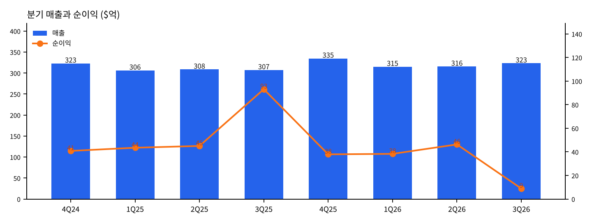
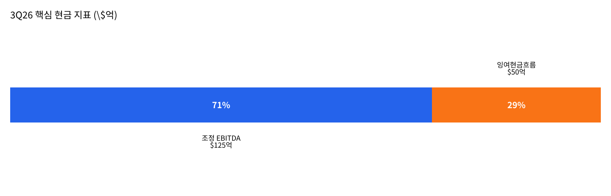
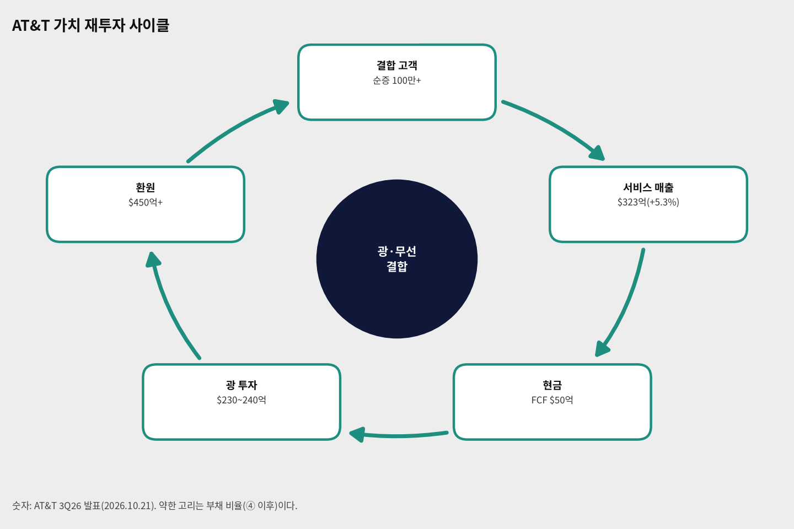

AT&T는 무선(5G)과 광·고정무선 인터넷을 묶어 파는 통신사다. 구리망 레거시 사업을 줄이고 광 투자를 늘리는 중이다.
| 항목 | 내용 |
|---|---|
| 종목 | AT&T (T) · NYSE · 커뮤니케이션(통신) · 텍사스 댈러스 |
| 멀티플 | PER·PEG는 조정 EPS 기준(08 항목 표) |
| 최근 분기(3Q26) | 매출 $323억, 조정 EBITDA $125억, 조정 EPS $0.65 |
| 가이던스(FY26) | 조정 EPS 약 $2.40, FCF $180억+ |
| 직원 수 | 약 133,030명(트레이딩뷰) |
| 직책 | 인물 | 역할·특징 |
|---|---|---|
| 회장·CEO | 존 스탠키(John Stankey) | '투자 중심 전략이 성과를 내고 있다'며 최고 수준의 서비스 매출 성장을 강조 |
| CFO | 파스칼 데스로셰(Pascal Desroches, 퇴임 예정) | 2027년 1월 제니퍼 비리(Jennifer Biry)가 후임으로 취임 예정 |
경영 스타일: '광·무선 결합 + 레거시 정리 + 주주 환원'. 광과 무선을 묶은 결합 고객을 늘리고 설비투자는 2027년부터 낮춘다.
광(2030년까지 6,000만+ 위치 목표)과 무선을 한 고객에 묶는다.
2027·28년 설비투자를 낮추고 $450억+ 환원을 이어간다.
다음 실적발표는 세 가지 질문에 답하는 자리다.
1. 고급 연결 순증 100만이 이어지나?
2. 순부채 비율이 2.5배로 내려가나?
3. 멕시코 무선 매각이 이익에 어떤 영향인가?
한 줄 판정 규칙: 첫 질문(순증)과 둘째 질문(순부채 비율)이 개선되면 약한 고리(부채 부담)가 풀린다.
일정: 4Q26 실적 발표는 트레이딩뷰 기준 2027.01.27(확인 필요). CFO 교체는 2027년 1월이다.
| 분기 | 매출 | 순이익 | EPS | 조정 EPS | 특이 사항 |
|---|---|---|---|---|---|
| 4Q24 | $323.0억 | $40.8억 | 0.56 | 0.54 | |
| 1Q25 | $306.3억 | $43.5억 | 0.61 | 0.51 | |
| 2Q25 | $308.5억 | $45.0억 | 0.62 | 0.54 | |
| 3Q25 | $307.1억 | $93.1억 | 1.29 | 0.54 | GAAP 순이익 $93.1억(DIRECTV 지분 매각 이익) |
| 4Q25 | $334.7억 | $37.9억 | 0.53 | 0.52 | |
| 1Q26 | $315.1억 | $38.3억 | 0.54 | 0.57 | |
| 2Q26 | $315.6억 | $46.3억 | 0.66 | 0.65 | |
| 3Q26 | $323.2억 | $8.9억 | 0.12 | 0.65 | GAAP EPS $0.12, 멕시코 무선 사업 손상, 조정 EPS $0.65 |
3Q26 매출 $323.2억(+5.3%), 계속사업 순이익 $8.9억(멕시코 무선 손상 반영), 조정 EPS $0.65(+20%)(회사 발표 2026.10.21). 4Q25 GAAP 순이익은 DIRECTV 지분 매각 이익을 포함한다. 매출·순이익·EPS(GAAP 희석)는 트레이딩뷰 스캐너, 조정 EPS는 트레이딩뷰 실적 페이지의 Reported 값이다. 분기 정렬은 오래된 분기→최신이다.

흐름 요약: 최근 분기 매출은 $323.2억로 전년 동기 $307.1억 대비 +5.2%, 순이익은 $8.9억(전년 $93.1억)다. 최근 4분기 GAAP EPS는 $1.85, 조정 EPS는 $2.39다.
| 항목 | 내용 | 3Q26 금액 | 비고 |
|---|---|---|---|
| 조정 EBITDA | 핵심 수익 지표 | $125억 | +5.4% |
| 총매출 | 통신·광 서비스·장비 | $323억 | +5.3% |
| 잉여현금흐름 | 현금 창출 | $50억 | 전년 $49억 |
| 설비투자(FY26 가이던스) | 연간 목표 | $230~240억 | 2027·28년 $220~230억 |

부문별 매출은 확인하지 못해 핵심 지표를 항목으로 정리했다. 차트에는 EBITDA·FCF를 표시했다.
AT&T는 '미국 최고의 연결 네트워크를 제공하고 고객을 광·무선으로 묶는 것'을 목표로 한다.
| 축 | 내용 |
|---|---|
| 연결 | 광·고정무선·무선 결합 |
| 현금 | FCF $180억+ |
| 환원 | 2026~28 $450억+ |

| 이동평균 | 값 | 종가 대비 | 위치 |
|---|---|---|---|
| 5일선 | $22.19 | -1.1% | 종가 아래 |
| 20일선 | $21.68 | +1.3% | 종가 위 |
| 50일선 | $23.36 | -6.0% | 종가 아래 |
| 100일선 | $23.51 | -6.6% | 종가 아래 |
| 200일선 | $24.83 | -11.6% | 종가 아래 |
52주 고가 $29.44(2026-03-24)·저가 $19.89(2026-07-02) 범위에서 종가 $21.95는 20일선을 웃돌고 5일선, 50일선, 100일선, 200일선은 밑돈다.
| 규칙 | 기준 | 현재 값 | 신호 |
|---|---|---|---|
| 장기 추세 필터 | 종가 vs 200일선 | $21.95 < $24.83 | 매도 |
| 중장기 교차 | 50일선 vs 200일선 | $23.36 < $24.83 | 매도 |
| 단기 교차 | 20일선 vs 50일선 | $21.68 < $23.36 | 매도 |
| 돈키언 채널 | 55일 고가 $26.93 / 저가 $20.52 | 중간값 $23.73 아래 | 매도 |
| 1개월 모멘텀 | 21거래일 수익률 | -6.3% (기준 $23.42) | 매도 |
| 3개월 모멘텀 | 63거래일 수익률 | -12.7% (기준 $25.15) | 매도 |
| 6개월 모멘텀 | 126거래일 수익률 | -12.0% (기준 $24.93) | 매도 |
| 12개월 모멘텀 | 252거래일 수익률 | -13.8% (기준 $25.47) | 매도 |
| 종합 (8개 평균) | -1.00 | 강한 매도 |
해석: 매수 신호 0개(없음), 매도 신호 8개(장기 추세 필터, 중장기 교차, 단기 교차, 돈키언 채널, 1개월 모멘텀, 3개월 모멘텀, 6개월 모멘텀, 12개월 모멘텀). CTA 점수 -1.00(강한 매도). 14일 ATR $0.47 (2.1%), 52주 고가 $29.44 · 저가 $19.89.
| 가격 | 기준 | 무엇이 바뀌나 |
|---|---|---|
| $26.93 | 55일 고가 | 돌파 시 채널 상단 갱신 |
| $25.47 | 12개월 모멘텀 기준가 | 종가가 이 가격 위면 12개월 신호 매수 |
| $25.15 | 3개월 모멘텀 기준가 | 종가가 이 가격 위면 3개월 신호 매수 |
| $24.93 | 6개월 모멘텀 기준가 | 종가가 이 가격 위면 6개월 신호 매수 |
| $24.83 | 200일선 | 종가가 이 선 위/아래인지로 장기 추세 신호가 바뀜 |
| $23.73 | 돈키언 중간값 | 55일 채널 중간값 위/아래로 신호가 바뀜 |
| $23.42 | 1개월 모멘텀 기준가 | 종가가 이 가격 위면 1개월 신호 매수 |
| $20.52 | 55일 저가 | 이탈 시 채널 하단 갱신 |
가격 수준은 신호가 바뀌는 기준선일 뿐 진입·청산 가격 제안이 아니다. 20일/50일 교차는 이동평균 자체가 움직여 단일 가격으로 표시하지 않았다. 일봉·주봉은 종가 기준 직접 계산(고저 데이터 미사용)이다.
| 악재 요인 | 내용 | 강도 |
|---|---|---|
| 부채 | 순부채 $1,498억, 3.13배 | 높음 |
| GAAP 손상 | 멕시코 무선 비현금 손상 | 중간 |
| CFO 교체 | 2027년 1월 후임 취임 | 참고 |
| 경쟁 | 통신 3사 프로모션 경쟁 | 중간 |
| 티커 | 회사 | PER(TTM) | PEG | P/S | EPS 성장(YoY) |
|---|---|---|---|---|---|
| T | AT&T | 9.2배 | 0.75 | 1.15배 | +12% |
| VZ | Verizon | 11.8배 | – | 1.37배 | -16% |
| TMUS | T-Mobile | 15.8배 | – | 1.92배 | +0% |
| CMCSA | Comcast | 8.0배 | – | 0.73배 | -48% |
비교 결론: AT&T PER은 Verizon과 비슷하고 Comcast보다 높다.
AT&T는 FCF 약 $180억(TTM)으로 부채 $1,781억과 환원을 감당한다.
| 지표 | 값 | 출처 | 해석 |
|---|---|---|---|
| 현금·단기투자 | $112억 | 트레이딩뷰 스캐너(최근 분기) | |
| 총부채 | $1,781억 | 트레이딩뷰 스캐너(최근 분기) | |
| 순부채(부채−현금) | $1,669억 | 내 계산 | 현금 대비 부채 부담 |
| 잉여현금흐름(TTM) | $180억 | 트레이딩뷰 스캐너 | |
| TTM 매출 | $1,289억 | 트레이딩뷰 스캐너 |
| 기준 | 매출 | P/S | 비고 |
|---|---|---|---|
| 내 계산(종가 ÷ 최근 4분기 매출 합계) | $1,288.6억 | 1.15배 | 시총은 정렬용 데이터에서만 사용 |
| 동종(트레이딩뷰) | – | VZ 1.37배 · TMUS 1.92배 · CMCSA 0.73배 | 11.19 |
해석: P/S 1.18배는 Verizon(1.37배)보다 낮다.
EBITDA는 영업활동의 현금 창출력을 보는 지표이고, PEG는 PER을 EPS 성장률로 나눈 값이다. EBITDA·FCF는 트레이딩뷰 TTM 값이다.
| 지표 | 값 | 산출 |
|---|---|---|
| EBITDA(TTM) | $480억 | 트레이딩뷰 스캐너 |
| EBITDA 마진 | 37.2% | EBITDA ÷ TTM 매출(내 계산) |
| FCF 마진 | 14.0% | FCF ÷ TTM 매출(내 계산) |
| PER(GAAP TTM) | 11.9배 | $21.95 ÷ $1.85 |
| PER(조정 TTM) | 9.2배 | $21.95 ÷ $2.39 |
| 방식 | PER | EPS 성장률 | PEG | 판정 |
|---|---|---|---|---|
| 조정 EPS (TTM $2.39) | 9.2배 | +12% ($2.13 → $2.39) | 0.75 | 투자 적격 |
| GAAP EPS (TTM $1.85) | 11.9배 | -40% ($3.08 → $1.85) | 산출 불가 | 참고 |
판정: 조정 EPS 기준 PEG 0.75 → 1.0 이하(투자 적격) PEG 기준은 1.0 이하 투자 적격, 0.5 이하 적극 매수다. EPS 성장률은 최근 4분기 EPS 합계를 직전 4분기 합계와 비교한 값(내 계산)이고, 일회성 항목이 있으면 조정 EPS 행을 함께 본다.

AT&T의 사이클은 결합 고객 → 서비스 매출 → 현금 → 광 투자 → 환원이다.
| 고리 | 현재 숫자 | 고리 강도 | 약해지는 신호 |
|---|---|---|---|
| ① 결합 고객 | 고급 연결 순증 100만+ | 강함 | 경쟁 |
| ② 서비스 매출 | 매출 $323억(+5.3%) | 강함 | 레거시 감소 |
| ③ 현금 | FCF $50억 | 강함 | 부채 |
| ④ 광 투자 | 설비투자 $230~240억 | 진행 중 | 2027년 감소 |
| ⑤ 환원 | 2026~28 $450억+ | 보통 | 부채 비율 |
사이클의 특징: 가장 약한 곳은 ④ 광 투자 이후의 부채 비율이다. 순부채/EBITDA가 3.13배다.